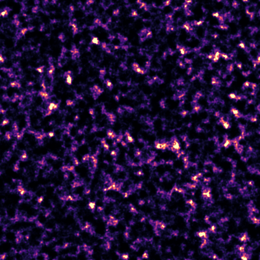
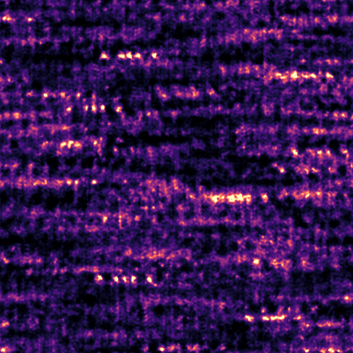

Skip to viewer
ILLUSTRATIVE MOCK DATA
· synthetic imagery · fictional paths, hashes and numbers
V
Vesqira
▤
Datasets
◫
Viewer ·
MOCK_HI_cube_L1234_v2
⇄
Compare · B ⇄ C
▦
Board · Orion HI draft
Ledger
[
Light
theme, toggle
⇤
◀
Channel index
▶
⇥
ROI
R
←
→
channel ·
Shift
×10 ·
Alt
+arrows cursor


tiles pending
ROI A
CACHED PREVIEW
30′
Pixel x, y (FITS 1-based)
RA
Dec
Value
Mask
Region spectrum
Plot
Table
Prototype state switcher
default
loading
error (partial range failed)
no-wcs
no-spectral
also via
?state=…